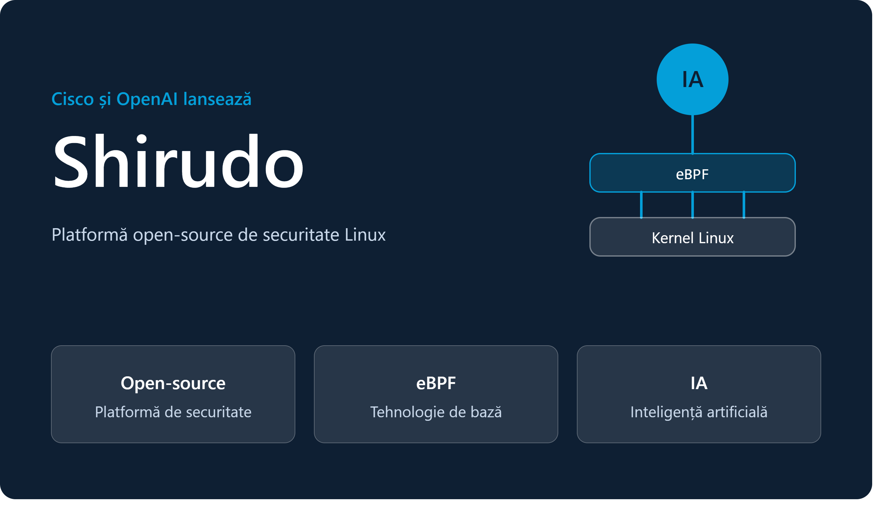

Cisco și OpenAI lansează Shirudo, o platformă open-source de securitate Linux bazată pe eBPF și inteligență artificială

Cisco și OpenAI au prezentat Shirudo, o nouă platformă open-source de securitate bazată pe tehnologia eBPF, concepută pentru a proteja sistemele Linux aflate în funcțiune împotriva exploatării vulnerabilităților, fără a necesita repornirea serverelor sau întreruperea aplicațiilor.
Dezvoltat în colaborare cu echipa Isovalent din cadrul Cisco, proiectul pornește de la fundația oferită de Tetragon — un instrument cunoscut de observabilitate și aplicare a politicilor de securitate în timp real — dar a fost reproiectat de la zero pentru a susține remedierea vulnerabilităților asistată de inteligența artificială.
Cum reduce Shirudo fereastra de expunere la atacuri
Scopul principal al platformei Shirudo este de a acoperi intervalul critic dintre momentul descoperirii unei breșe de securitate și momentul aplicării unui patch permanent. În locul actualizărilor clasice de software care impun adesea ferestre de mentenanță, administratorii pot implementa protecții punctuale în timp real, care blochează strict căile de cod vulnerabile, lăsând traficul legitim să funcționeze normal.
Principalele mecanisme și caracteristici ale platformei includ:
Protecție la nivel de nucleu și aplicație: Shirudo utilizează eBPF pentru a monitoriza activitatea sistemului și a modifica comportamentul nucleului Linux în timp real. Pentru vulnerabilitățile care nu pot fi izolate eficient prin eBPF, platforma permite și aplicarea de modificări directe asupra bytecode-ului aplicațiilor.
Flux de lucru asistat de agenți AI: Echipele de securitate pot folosi agenți AI pentru a analiza vulnerabilitățile, a genera codul de atenuare și a testa eficiența acestuia atât împotriva exploit-urilor, cât și a sarcinilor de lucru legitime. Înainte de activarea efectivă a protecției, operatorii umani își păstrează controlul deplin și pot evalua impactul asupra aplicațiilor active.
Arhitectură fără daemon permanent: Din punct de vedere arhitectural, Shirudo nu rulează un serviciu de fundal permanent. Modulele sale de securitate, denumite upatches (micropatch-uri), sunt distribuite sub formă de pachete semnate criptografic prin intermediul registrelor OCI (Open Container Initiative).
Atestare hardware prin TPM: Platforma folosește un modul TPM (Trusted Platform Module) pentru a menține un jurnal verificabil criptografic al tuturor protecțiilor activate sau eliminate de pe sistem.
Test practic împotriva vulnerabilității Java4Shell
Pentru a demonstra capabilitățile platformei în condiții reale, Cisco și OpenAI au efectuat un test controlat vizând Java4Shell, o vulnerabilitate recent descoperită în OpenJDK. Cu ajutorul modelului Codex dezvoltat de OpenAI, echipa a generat automat o măsură de protecție care a modificat decodorul Base64 al Java direct în memoria unei instanțe Elasticsearch 9.5.5 aflate în execuție.
Protecția a reușit să blocheze tentativele de exploatare a vulnerabilității, în timp ce instanța Elasticsearch a continuat să funcționeze neîntrerupt, fără nicio repornire.
Cazuri de utilizare și licențiere
Pe lângă blocarea rapidă a vulnerabilităților de tip zero-day, Shirudo este gândit pentru consolidarea securității sistemelor (system hardening), izolarea containerelor, a pod-urilor Kubernetes și a agenților AI, monitorizarea securității în timp real, precum și protejarea dispozitivelor embedded și edge, unde actualizările convenționale de software sunt dificil de implementat.
Proiectul oferă suport pentru arhitecturile x86-64, ARM64 și RISC-V și este disponibil sub licența BSD 2-Clause, programele sale BPF fiind distribuite sub licențiere duală BSD și GPL.